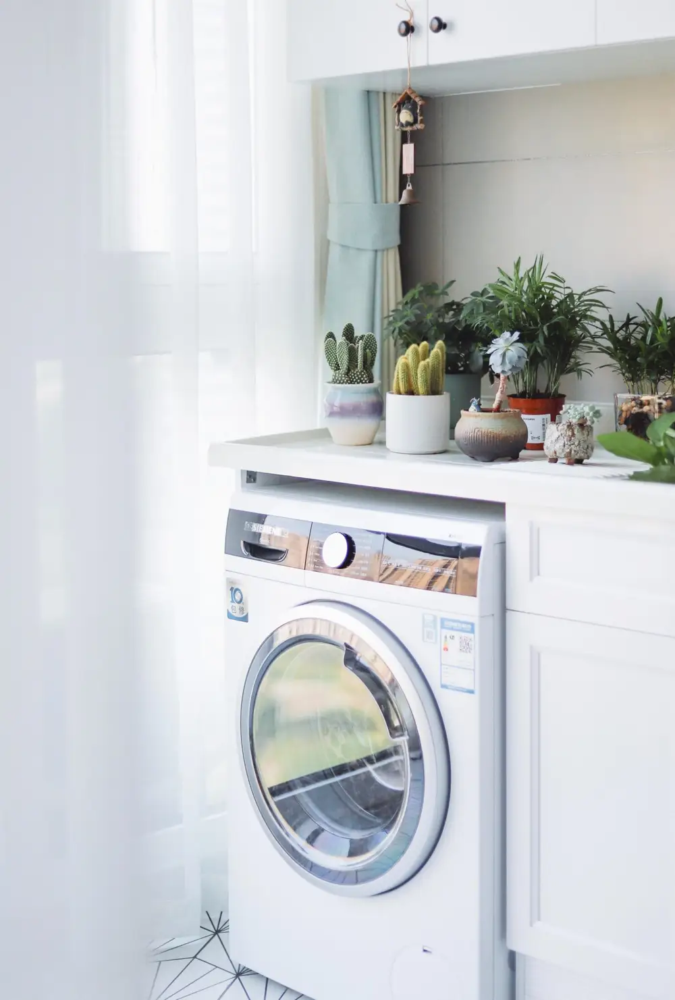

July 5, 2021
Each year, there are 2,900 clothes dryer fires reported in the United States, which cause on average 5 deaths, 100 injuries, and over $35 million in damage. Dryers need to be maintained regularly to last and operate safely. Here are some signs it’s time to get your clothes dryer fixed:
The dryer runs much longer than it should
If the clothes still seem damp after a cycle
As the dryer runs, it shakes or moves
Follow these easy steps to extend the life of your dryer:
You should clean the lint screen after every load. If your dryer screen is dirty, clean it with used fabric softener sheets or with a soft cloth. Your fingernails and nose will thank you.
Keep the area around the lint screen free of debris. You can remove the lint screen and clean the housing cavity of the dryer with a dryer lint brush. Alternatively, you can use the crevice attachment on your vacuum cleaner for faster cleaning.
Wipe down the interior of your dryer. It’s best to clean the interior of your dryer at least once a month, even if there are no visible stains or residue. To clean the drum, first: unplug the appliance, then soak a spare rag in warm, soapy water then wipe down the inside.
Make sure you vacuum around and underneath your dryer. One way of keeping your appliance looking new is by giving it a good cleaning around the edges. It is easy for moisture, dirt, and lint to accumulate over time, so make sure to give it a go at least 3 times a year.
Check if your dryer is balanced. An un-level dryer will wear out its rotating components faster than one that is even. If you hear banging or movement coming from your dryer, you may need to adjust the feet on the bottom, prop it up with some folded paper or cardboard for a quick fix to a potentially costly repair down the line.
Examine the exterior exhaust. When debris accumulates in the vent, it sometimes prevents proper airflow.
Don’t overload the dryer with clothes. If your dryer is full to the brim, it will not work efficiently. The laundry will dry much more slowly. If you pile too many clothes, towels, and sheets in the dryer at once, it will be forced to work harder to dry them. As the motor tries to do its job, the dryer may overheat and eventually fizzle out.
The vent system should be inspected and cleaned. When you notice that your dryer is not performing as well as it should, hire professionals to clean your ducts and vent to remove any debris. In households with furry friends or a large family, this service may be required as often as twice a year.
Has your dryer stopped running like it normally does? Our team of experienced professionals is here to help. We can service your exhaust vents and do the full maintenance with exceptional precision and superior customer service. To learn more about us, visit https://gofftx.com/ or call us on 903-838-6923.